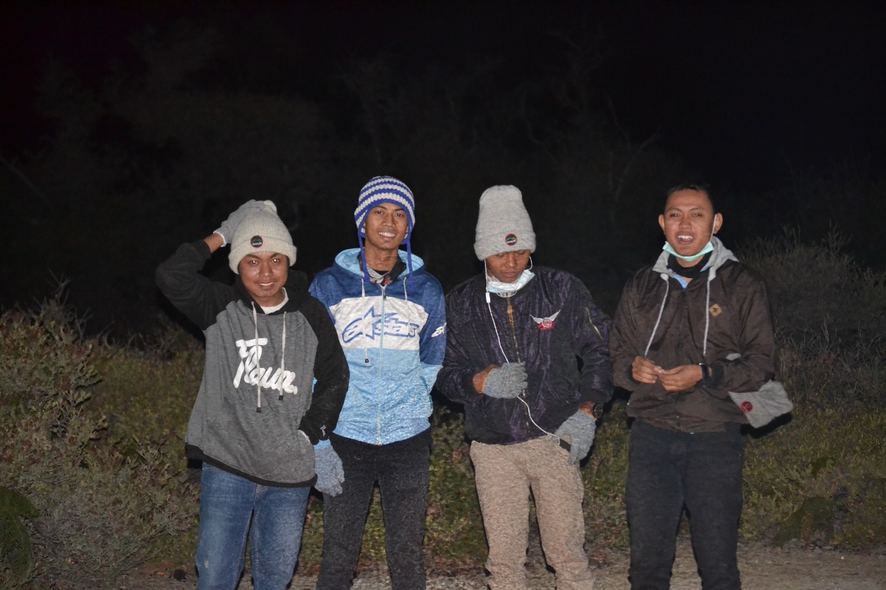

Kawah Ijen
Dataran tinggi Ijen, atau yang lebih dikenal dengan ‘Kawah Ijen’ sangat direkomendasikan untuk dikunjungi, terutama bagi para penggemar dan pendaki gunung. Dataran tinggi ini merupakan kawah aktif yang berukuran sangat besar dengan luas 134 kilometer persegi. Ijen merupakan gunung berapi yang tenang namun aktif dengan bentang alam yang didominasi oleh puncak gunung berapi Ijen (2.368 dpl), Merapi (2.800 mdpl) di sisi timur laut dari dataran ini, dan Raung (3.332 mdpl) di sudut barat daya. Vent pada gunung berapi merupakan sumber belerang untuk mengumpulkannya, para pekerja membuat jalur menuju kawah dan turun ke danau, setiap hari.